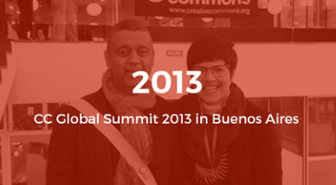
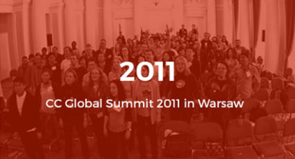

Creative Commons
Global Summit 2015 Logo
Creative Commons Global Summit 2015 Logo
The logo of CC Global Summit 2015 was decided through the logo competition from 8 June to 7 July.
After online public voting and Selection Committee's judging process, the logo from Naresh Agarwal won the prize. After consultation with Mr. Agarwal we optimized the prize-winning-logo for this year's summit as following :
See the past CC Global Summit
Take a look at the last two CC Global Summits which took place in Buenos Aires and in Warsaw.

